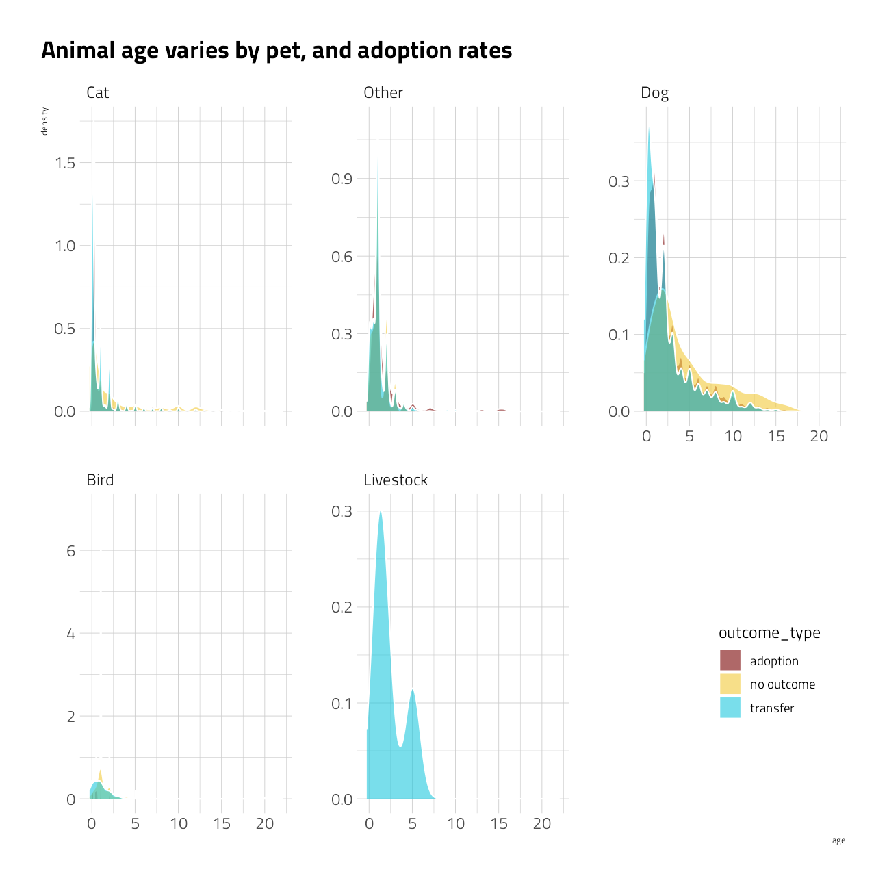
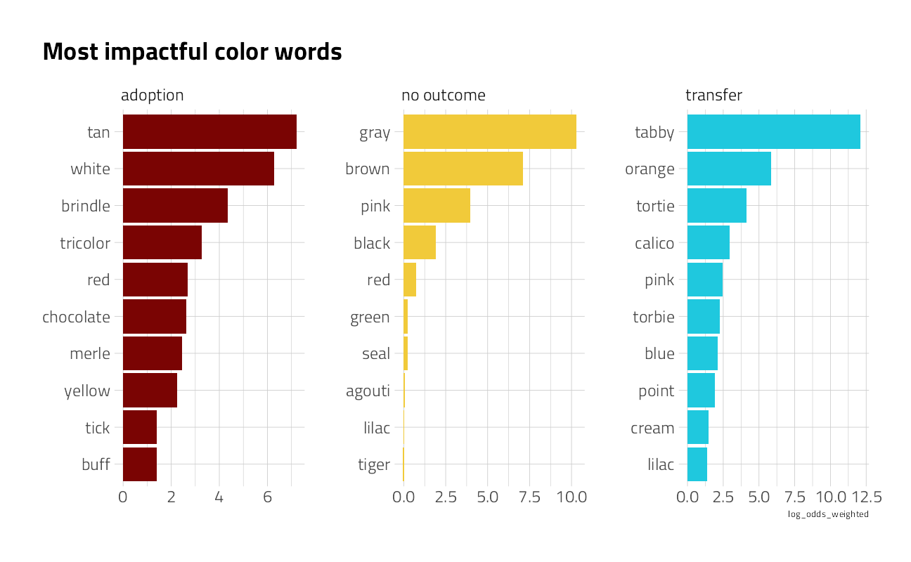

Last updated: 2021-10-12
Checks:
Knit directory: myTidyTuesday/
This reproducible R Markdown analysis was created with workflowr (version 1.6.2). The Checks tab describes the reproducibility checks that were applied when the results were created. The Past versions tab lists the development history.
Great! Since the R Markdown file has been committed to the Git repository, you know the exact version of the code that produced these results.
Great job! The global environment was empty. Objects defined in the global environment can affect the analysis in your R Markdown file in unknown ways. For reproduciblity it’s best to always run the code in an empty environment.
The command set.seed(20210907) was run prior to running the code in the R Markdown file. Setting a seed ensures that any results that rely on randomness, e.g. subsampling or permutations, are reproducible.
Nice! There were no cached chunks for this analysis, so you can be confident that you successfully produced the results during this run.
Great job! Using relative paths to the files within your workflowr project makes it easier to run your code on other machines.
Great! You are using Git for version control. Tracking code development and connecting the code version to the results is critical for reproducibility.
The results in this page were generated with repository version a0d34c3 . See the Past versions tab to see a history of the changes made to the R Markdown and HTML files.
Note that you need to be careful to ensure that all relevant files for the analysis have been committed to Git prior to generating the results (you can use wflow_publish or wflow_git_commit). workflowr only checks the R Markdown file, but you know if there are other scripts or data files that it depends on. Below is the status of the Git repository when the results were generated:
Ignored files:
Ignored: .Rhistory
Ignored: .Rproj.user/
Ignored: catboost_info/
Ignored: data/2021-10-12/
Ignored: data/CNHI_Excel_Chart.xlsx
Ignored: data/CommunityTreemap.jpeg
Ignored: data/Community_Roles.jpeg
Ignored: data/YammerDigitalDataScienceMembership.xlsx
Ignored: data/accountchurn.rds
Ignored: data/acs_poverty.rds
Ignored: data/advancedaccountchurn.rds
Ignored: data/airbnbcatboost.rds
Ignored: data/australiaweather.rds
Ignored: data/baseballHRxgboost.rds
Ignored: data/baseballHRxgboost2.rds
Ignored: data/fmhpi.rds
Ignored: data/grainstocks.rds
Ignored: data/hike_data.rds
Ignored: data/nber_rs.rmd
Ignored: data/netflixTitles2.rds
Ignored: data/pets.rds
Ignored: data/pets2.rds
Ignored: data/spotifyxgboost.rds
Ignored: data/spotifyxgboostadvanced.rds
Ignored: data/us_states.rds
Ignored: data/us_states_hexgrid.geojson
Ignored: data/weatherstats_toronto_daily.csv
Untracked files:
Untracked: code/YammerReach.R
Untracked: code/work list batch targets.R
Note that any generated files, e.g. HTML, png, CSS, etc., are not included in this status report because it is ok for generated content to have uncommitted changes.
These are the previous versions of the repository in which changes were made to the R Markdown (analysis/2021_08_03_sliced.Rmd) and HTML (docs/2021_08_03_sliced.html) files. If you’ve configured a remote Git repository (see ?wflow_git_remote), click on the hyperlinks in the table below to view the files as they were in that past version.
File
Version
Author
Date
Message
Rmd
a0d34c3
opus1993
2021-10-12
adopt common color palette
Season 1 Episode 10 of #SLICED features a multi-class challenge to predict the outcomes of pet shelter animals (adoption, transfer, or no outcome). The evaluation metric for submissions in this competition is classification mean logloss.
SLICED is like the TV Show Chopped but for data science. The four competitors get a never-before-seen dataset and two-hours to code a solution to a prediction challenge. Contestants get points for the best model plus bonus points for data visualization, votes from the audience, and more.
The audience is invited to participate as well. This file consists of my submissions with cleanup and commentary added.
To make the best use of the resources that we have, we will explore the data set for features to select those with the most predictive power, build a random forest to confirm the recipe, and then build one or more ensemble models. If there is time, we will craft some visuals for model explainability.
Let’s load up packages:
suppressPackageStartupMessages({
library(tidyverse) # clean and transform rectangular data
library(hrbrthemes) # plot theming
library(lubridate) # date and time transformations
library(tidymodels) # machine learning tools
library(finetune) # racing methods for accelerating hyperparameter tuning
library(textrecipes)
library(tidylo)
library(tidytext)
library(themis) # ml prep tools for handling unbalanced datasets
library(baguette) # ml tools for bagged decision tree models
library(vip) # interpret model performance
library(DALEXtra)
})
source(here::here("code","_common.R"),
verbose = FALSE,
local = knitr::knit_global())
ggplot2::theme_set(theme_jim(base_size = 12))
#create a data directory
data_dir <- here::here("data",Sys.Date())
if (!file.exists(data_dir)) dir.create(data_dir)
# set a competition metric
mset <- metric_set(mn_log_loss, accuracy, roc_auc)
# set the competition name from the web address
competition_name <- "sliced-s01e10-playoffs-2"
zipfile <- paste0(data_dir,"/", competition_name, ".zip")
path_export <- here::here("data",Sys.Date(),paste0(competition_name,".csv"))
Get the Data
A quick reminder before downloading the dataset: Go to the web site and accept the competition terms!!!
We have basic shell commands available to interact with Kaggle here:
# from the Kaggle api https://github.com/Kaggle/kaggle-api
# the leaderboard
shell(glue::glue("kaggle competitions leaderboard { competition_name } -s"))
# the files to download
shell(glue::glue("kaggle competitions files -c { competition_name }"))
# the command to download files
shell(glue::glue("kaggle competitions download -c { competition_name } -p { data_dir }"))
# unzip the files received
shell(glue::glue("unzip { zipfile } -d { data_dir }"))We are reading in the contents of the datafiles here.
train_df <- read_csv(file = glue::glue(
{
data_dir
},
"/train.csv"
)) %>%
mutate(across(c("animal_type", "sex", "spay_neuter", "outcome_type"), as_factor)) %>%
mutate(datetime = as.Date(datetime))
holdout_df <- read_csv(file = glue::glue(
{
data_dir
},
"/test.csv"
)) %>%
mutate(across(c("animal_type", "sex", "spay_neuter"), as_factor)) %>%
mutate(datetime = as.Date(datetime))Some questions to answer here: What features have missing data, and imputations may be required? What does the outcome variable look like, in terms of imbalance?
skimr::skim(train_df)Outcome variable outcome_type has three classes. We will take a closer look at what missingness means in this context.
Outcome Variable Distribution
summarize_outcome <- function(tbl) {
ret <- tbl %>%
summarize(
n_is_adoption = sum(outcome_type == "adoption"),
n_is_transfer = sum(outcome_type == "transfer"),
n_is_no_outcome = sum(outcome_type == "no outcome"),
n = n(),
.groups = "drop"
) %>%
arrange(desc(n)) %>%
mutate(
pct_is_adoption = n_is_adoption / n,
adoption_low = qbeta(.025, n_is_adoption + .5, n - n_is_adoption + .5),
adoption_high = qbeta(.975, n_is_adoption + .5, n - n_is_adoption + .5),
pct_is_transfer = n_is_adoption / n,
transfer_low = qbeta(.025, pct_is_transfer + .5, n - pct_is_transfer + .5),
transfer_high = qbeta(.975, pct_is_transfer + .5, n - pct_is_transfer + .5),
pct_is_no_outcome = n_is_adoption / n,
no_outcome_low = qbeta(.025, pct_is_no_outcome + .5, n - pct_is_no_outcome + .5),
no_outcome_high = qbeta(.975, pct_is_no_outcome + .5, n - pct_is_no_outcome + .5),
) %>%
mutate(pct = n / sum(n))
ret
}train_df %>%
count(outcome_type) %>%
ggplot(aes(n, outcome_type, fill = outcome_type)) +
geom_col(show.legend = FALSE) +
labs(subtitle = "There are a lot more adoptions in this dataset than transfers or no outcomes (maybe censored?).
", fill = NULL, y = NULL)
train_df %>%
group_by(animal_type) %>%
summarize_outcome() %>%
mutate(animal_type = fct_reorder(animal_type, pct_is_adoption)) %>%
ggplot(aes(pct_is_adoption, animal_type)) +
geom_point(aes(size = pct)) +
geom_errorbarh(aes(xmin = adoption_low, xmax = adoption_high), height = .3) +
scale_size_continuous(
labels = percent,
guide = "none",
range = c(.5, 4)
) +
scale_x_continuous(labels = percent) +
labs(
x = "Proportion of dataset",
y = "",
title = "What animals get the most adoptions?",
subtitle = "Including 95% intervals. Size of points is proportional to frequency in the dataset"
)
train_df %>%
group_by(spay_neuter) %>%
summarize_outcome() %>%
mutate(
spay_neuter = fct_reorder(spay_neuter, n_is_adoption)
) %>%
ggplot(aes(pct_is_adoption, spay_neuter)) +
geom_point(aes(size = pct)) +
geom_errorbarh(aes(xmin = adoption_low, xmax = adoption_high), height = .3) +
scale_size_continuous(
labels = percent,
guide = "none",
range = c(.5, 4)
) +
scale_x_continuous(labels = percent) +
labs(
x = "Percent adoption rate",
y = "",
title = "Does fixing get the most adoptions?",
subtitle = "Including 95% intervals. Size of points is proportional to frequency in the dataset"
)
train_df %>%
mutate(age = time_length(as.period(datetime - date_of_birth, unit = "day"), unit = "years")) %>%
ggplot(aes(age, fill = outcome_type)) +
geom_density(position = "identity", alpha = 0.6, color = "white") +
facet_wrap(~animal_type, scale = "free_y") +
labs(title = "Animal age varies by pet, and adoption rates") +
theme(legend.position = c(0.9, 0.2))
train_df %>%
mutate(adoption_month = month(datetime, label = TRUE)) %>%
group_by(adoption_month) %>%
summarize_outcome() %>%
ggplot(aes(pct_is_adoption, adoption_month)) +
geom_point(aes(size = pct)) +
geom_errorbarh(aes(xmin = adoption_low, xmax = adoption_high), height = .3) +
scale_size_continuous(
labels = percent,
guide = "none",
range = c(.5, 4)
) +
scale_x_continuous(labels = percent) +
labs(
x = "Adoption proportion",
y = "",
title = "Does adoption month influence the adoption rate?",
subtitle = "Including 95% intervals. Size of points is proportional to frequency in the dataset"
)
train_df %>%
count(animal_type, sex, outcome_type) %>%
ggplot(aes(n, outcome_type, fill = sex)) +
geom_col(position = position_dodge(preserve = "single"), show.legend = FALSE) +
facet_wrap(vars(animal_type), scales = "free_x") +
scale_x_continuous(n.breaks = 3) +
theme(plot.subtitle = ggtext::element_textbox_simple()) +
labs(
y = NULL, x = "Number of shelter animals",
title = "Does the gender of the animal drive outcomes?",
subtitle = "Pets that are <span style = 'color:#7A0403FF'>male</span>, <span style = 'color:#F1CA3AFF'> unknown</span> and <span style = 'color:#1FC8DEFF'> female</span>."
)
Time series
train_df %>%
group_by(year = lubridate::year(datetime)) %>%
summarize_outcome() %>%
ggplot(aes(year, pct_is_adoption)) +
geom_point(aes(size = n)) +
geom_line() +
geom_ribbon(aes(ymin = adoption_low, ymax = adoption_high), alpha = .2) +
expand_limits(y = 0) +
scale_y_continuous(labels = percent) +
scale_size_continuous(guide = "none") +
labs(
x = "Birth Year",
y = "% adoptions",
title = "Adoption rates are getting better",
subtitle = glue::glue("Ribbon shows 95% confidence bound by week for dataset spanning { min(train_df$datetime) } thru { max(train_df$datetime) }.")
)
train_df %>%
mutate(outcome_type = outcome_type == "adoption") %>%
group_by(
week = week(datetime),
wday = wday(datetime, label = TRUE)
) %>%
summarise(
outcome_type = mean(outcome_type),
.groups = "drop"
) %>%
ggplot(aes(week, wday, fill = outcome_type)) +
geom_tile(alpha = 0.8) +
scale_fill_viridis_c(
labels = scales::percent_format(accuracy = 1),
option = "H"
) +
labs(
fill = "% adopted", x = "week of the year", y = "week day",
title = "Greater proportions of adoption actions on weekends"
)
Text analysis
Julia Silge and team deserve a huge amount of credit for both the package development and the many demonstrations of text log odds on their blogs and YouTube.
color_log_odds <- train_df %>%
unnest_tokens(color_word, color) %>%
count(outcome_type, color_word) %>%
bind_log_odds(outcome_type, color_word, n)
color_log_odds %>%
group_by(outcome_type) %>%
slice_max(log_odds_weighted, n = 10) %>%
mutate(color_word = reorder_within(color_word, log_odds_weighted, n)) %>%
ggplot(aes(log_odds_weighted, color_word, fill = outcome_type)) +
geom_col(show.legend = FALSE) +
scale_y_reordered() +
facet_wrap(~outcome_type, scales = "free") +
labs(y = NULL, title = "Most impactful color words")
key_colors <- color_log_odds %>%
group_by(outcome_type) %>%
slice_max(log_odds_weighted, n = 10) %>%
mutate(color_word = stringr::str_to_title(color_word)) %>%
pull(color_word)breed_log_odds <- train_df %>%
unnest_tokens(breed_word, breed) %>%
count(outcome_type, breed_word) %>%
bind_log_odds(outcome_type, breed_word, n)
breed_log_odds %>%
group_by(outcome_type) %>%
slice_max(log_odds_weighted, n = 10) %>%
mutate(breed_word = reorder_within(breed_word, log_odds_weighted, n)) %>%
ggplot(aes(log_odds_weighted, breed_word, fill = outcome_type)) +
geom_col(show.legend = FALSE) +
scale_y_reordered() +
facet_wrap(~outcome_type, scales = "free") +
labs(y = NULL, title = "Most impactful breed words")
key_breeds <- breed_log_odds %>%
group_by(outcome_type) %>%
slice_max(log_odds_weighted, n = 20) %>%
mutate(breed_word = stringr::str_to_title(breed_word)) %>%
pull(breed_word)
Machine Learning: Random Forest
Let’s run models in two steps. The first is a simple, fast shallow random forest, to confirm that the model will run and observe feature importance scores. The second will use xgboost. Both use the basic recipe preprocessor for now.
Cross Validation
We will use 5-fold cross validation and stratify on the outcome to build models that are less likely to over-fit the training data. As a sound modeling practice, I am going to hold 10% of the training data out to better assess the model performance prior to submission.
set.seed(2021)
split <- initial_split(train_df, prop = 0.9)
training <- training(split)
testing <- testing(split)
(folds <- vfold_cv(training, v = 5, strata = outcome_type))
The recipe
To move quickly I start with this basic recipe.
basic_rec <-
recipe(
outcome_type ~ animal_type + sex + spay_neuter + date_of_birth + datetime + breed + color,
data = training
) %>%
step_mutate(age = time_length(as.period(datetime - date_of_birth), unit = "years")) %>%
step_novel(all_nominal_predictors()) %>%
step_other(breed) %>%
step_other(color) %>%
step_date(datetime, features = c("year", "month", "dow"), keep_original_cols = FALSE) %>%
step_rm(date_of_birth)
Dataset for modeling
basic_rec %>%
# finalize_recipe(list(num_comp = 2)) %>%
prep() %>%
juice()
Model Specification
This first model is a bagged tree, where the number of predictors to consider for each split of a tree (i.e., mtry) equals the number of all available predictors. The min_n of 10 means that each tree branch of the 50 decision trees built have at least 10 observations. As a result, the decision trees in the ensemble all are relatively shallow.
(bag_spec <-
bag_tree(min_n = 10) %>%
set_engine("rpart", times = 50) %>%
set_mode("classification"))Bagged Decision Tree Model Specification (classification)
Main Arguments:
cost_complexity = 0
min_n = 10
Engine-Specific Arguments:
times = 50
Computational engine: rpart
Parallel backend
To speed up computation we will use a parallel backend.
all_cores <- parallelly::availableCores(omit = 1)
all_coressystem
11 future::plan("multisession", workers = all_cores) # on Windows
Fit and Variable Importance
Lets make a cursory check of the recipe and variable importance, which comes out of rpart for free. This workflow also handles factors without dummies.
Let’s have a quick peek at the performance.
bag_wf <-
workflow() %>%
add_recipe(basic_rec) %>%
add_model(bag_spec)
system.time(
bag_fit_rs <- fit_resamples(
bag_wf,
resamples = folds,
metrics = mset,
control = control_resamples(save_pred = TRUE)
)
) user system elapsed
93.54 8.98 141.56 How did these results turn out? The metrics are across the cross validation holdouts, and the confusion matrix is on the training data.
collect_metrics(bag_fit_rs)
bag_fit_rs %>%
collect_predictions() %>%
conf_mat(outcome_type, .pred_class) %>%
autoplot() +
labs(title = "Confusion Matrix on CV fold holdouts")
That’s not great. Even on the training set, the random forest failed to properly classify many pets. Let’s bank this first submission to Kaggle as-is.
bag_fit_best <-
workflow() %>%
add_recipe(basic_rec) %>%
add_model(bag_spec) %>%
finalize_workflow(select_best(bag_fit_rs, "mn_log_loss"))
bag_fit <- last_fit(bag_fit_best, split)collect_metrics(bag_fit, summarize = TRUE)
Let’s take a look at variable importance to explore additional feature engineering possibilities.
extract_fit_parsnip(bag_fit)$fit$imp %>%
mutate(term = fct_reorder(term, value)) %>%
ggplot(aes(value, term)) +
geom_point() +
geom_errorbarh(aes(
xmin = value - `std.error` / 2,
xmax = value + `std.error` / 2
),
height = .3
) +
labs(
title = "Feature Importance",
x = NULL, y = NULL
)
collect_predictions(bag_fit) %>%
roc_curve(outcome_type, .pred_adoption:.pred_transfer) %>%
ggplot(aes(1 - specificity, sensitivity, color = .level)) +
geom_abline(lty = 2, color = "gray80", size = 1.5) +
geom_path(alpha = 0.8, size = 1) +
coord_equal() +
labs(color = NULL)
best_fit <- fit(bag_fit_best, data = train_df)
holdout_result <- augment(best_fit, holdout_df)
submission <- holdout_result %>%
select(id, adoption = .pred_adoption, `no outcome` = `.pred_no outcome`, `transfer` = .pred_transfer)write_csv(submission, file = path_export)shell(glue::glue('kaggle competitions submit -c { competition_name } -f { path_export } -m "Simple random forest model 4"'))
Machine Learning: XGBoost Model 1
Model Specification
Let’s start with a boosted early stopping XGBoost model that runs fast and gives an early indication of which hyperparameters make the most difference in model performance.
(xgboost_spec <- boost_tree(
trees = 500,
mtry = tune(),
learn_rate = tune(),
stop_iter = tune()
) %>%
set_engine("xgboost", validation = 0.2) %>%
set_mode("classification"))Boosted Tree Model Specification (classification)
Main Arguments:
mtry = tune()
trees = 500
learn_rate = tune()
stop_iter = tune()
Engine-Specific Arguments:
validation = 0.2
Computational engine: xgboost
Tuning and Performance
We will start with the basic recipe from above. The tuning grid will evaluate hyperparameter combinations across our resample folds and report on the best average. The confusion matrix reported here is on the 10% of training_df held out.
xgboost_rec <- basic_rec %>%
step_dummy(all_nominal_predictors(), one_hot = TRUE)
stopping_grid <-
grid_latin_hypercube(
mtry(range = c(5L, 20L)), ## for the number of columns in juiced training set
learn_rate(range = c(-5, -1)), ## keep pretty big
stop_iter(range = c(10L, 50L)), ## bigger than default
size = 10
)system.time(
cv_res_xgboost <-
workflow() %>%
add_recipe(xgboost_rec) %>%
add_model(xgboost_spec) %>%
tune_grid(
resamples = folds,
grid = stopping_grid,
metrics = mset,
control = control_grid(save_pred = TRUE)
)
)autoplot(cv_res_xgboost)
show_best(cv_res_xgboost, metric = "mn_log_loss")
cv_res_xgboost %>%
collect_predictions() %>%
conf_mat(outcome_type, .pred_class) %>%
autoplot() +
labs(title = "XGBoost Confusion Matrix on CV fold holdouts")
On the surface, this first XGBoost pass is not quite as good as the random forest was. Let’s use last_fit() to fit one final time to the training data and evaluate one final time on the testing data, with the numerically optimal result.
fit_best_xg1 <- workflow() %>%
add_recipe(xgboost_rec) %>%
add_model(xgboost_spec) %>%
finalize_workflow(select_best(cv_res_xgboost, metric = "mn_log_loss")) %>%
fit(train_df)holdout_result <- augment(fit_best_xg1, holdout_df)
submission <- holdout_result %>%
select(id, adoption = .pred_adoption, `no outcome` = `.pred_no outcome`, `transfer` = .pred_transfer)I am going to attempt to post this second submission to Kaggle, and work more with xgboost and a more advanced recipe to do better.
write_csv(submission, file = path_export)shell(glue::glue('kaggle competitions submit -c { competition_name } -f { path_export } -m "Simple random forest model 2"'))
Machine Learning: XGBoost Model 2
Let’s use what we learned above to set a more advanced recipe. This time, let’s also try thetune_race_anova technique for skipping the parts of the grid search that do not perform well.
Advanced Recipe
There may be an opportunity to add breed and color features to improve the model.
advanced_rec <-
recipe(
outcome_type ~ animal_type + sex + spay_neuter + date_of_birth + datetime + breed + color,
data = train_df
) %>%
step_mutate(age = time_length(as.period(datetime - date_of_birth), unit = "years")) %>%
step_novel(all_nominal_predictors()) %>%
step_mutate(key_breed = if_else(str_detect(breed, str_flatten(key_breeds, collapse = "|")),
str_match(breed, str_flatten(key_breeds, collapse = "|")),
"OtherBreed"
)) %>%
step_mutate(key_color = if_else(str_detect(color, str_flatten(key_colors, collapse = "|")),
str_match(color, str_flatten(key_colors, collapse = "|")),
"OtherColor"
)) %>%
step_string2factor(key_breed, key_color) %>%
step_date(datetime, features = c("year", "month", "dow"), keep_original_cols = FALSE) %>%
step_rm(date_of_birth, breed, color) %>%
step_dummy(all_nominal_predictors(), one_hot = TRUE) %>%
step_zv(all_predictors())
Model Specification
(xgboost_spec <- boost_tree(
trees = 500,
min_n = tune(),
mtry = tune(),
tree_depth = 10,
learn_rate = tune()
) %>%
set_engine("xgboost") %>%
set_mode("classification"))Boosted Tree Model Specification (classification)
Main Arguments:
mtry = tune()
trees = 500
min_n = tune()
tree_depth = 10
learn_rate = tune()
Computational engine: xgboost
Tuning and Performance
race_anova_grid <-
grid_latin_hypercube(
min_n(),
mtry(range = c(12L, 20L)), ## for the number of columns in juiced training set
learn_rate(range = c(-2, -1)),
size = 10
)system.time(
cv_res_xgboost <-
workflow() %>%
add_recipe(advanced_rec) %>%
add_model(xgboost_spec) %>%
tune_race_anova(
resamples = folds,
grid = race_anova_grid,
control = control_race(
verbose_elim = TRUE,
parallel_over = "resamples",
save_pred = TRUE
),
metrics = mset
)
)We can visualize how the possible parameter combinations we tried did during the “race.” Notice how we saved a TON of time by not evaluating the parameter combinations that were clearly doing poorly on all the resamples; we only kept going with the good parameter combinations.
plot_race(cv_res_xgboost)
Let’s look at the top results
autoplot(cv_res_xgboost)
show_best(cv_res_xgboost, metric = "mn_log_loss")
This figure is likely more robust and a better estimate of performance on holdout data. Let’s fit on the entire training set at these hyperparameters to get a single performance estimate on the best model so far.
fit_best_xg2 <- workflow() %>%
add_recipe(xgboost_rec) %>%
add_model(xgboost_spec) %>%
finalize_workflow(select_best(cv_res_xgboost, metric = "mn_log_loss")) %>%
fit(train_df)[21:35:07] WARNING: amalgamation/../src/learner.cc:1095: Starting in XGBoost 1.3.0, the default evaluation metric used with the objective 'multi:softprob' was changed from 'merror' to 'mlogloss'. Explicitly set eval_metric if you'd like to restore the old behavior.holdout_result <- augment(fit_best_xg2, holdout_df)
submission <- holdout_result %>%
select(id, adoption = .pred_adoption, `no outcome` = `.pred_no outcome`, `transfer` = .pred_transfer)
Variable Importance
Let’s take a deeper dive into the XGBoost variable importance. That is, which features appear to drive towards higher pet adoption rates?
fit_best_xg2 %>%
extract_fit_parsnip() %>%
vip(geom = "point", num_features = 15) +
labs(
title = "XGBoost model Variable Importance",
subtitle = "Pet adoption outcome is driven by spay/neuter status and pet age"
)
After pet age, the type of animal being adopted is most important. The bat is a strange entry. People that make adoptions on Saturdays and Sundays appear to be more driven. Finally, pit bulls and mixed breeds are significant features.
We’re out of time. This will be as good as it gets. Our final submission:
Let’s post this final submission to Kaggle.
shell(glue::glue('kaggle competitions submit -c { competition_name } -f { path_export } -m "XGboost with advanced preprocessing model 2"'))
sessionInfo()R version 4.1.1 (2021-08-10)
Platform: x86_64-w64-mingw32/x64 (64-bit)
Running under: Windows 10 x64 (build 22000)
Matrix products: default
locale:
[1] LC_COLLATE=English_United States.1252
[2] LC_CTYPE=English_United States.1252
[3] LC_MONETARY=English_United States.1252
[4] LC_NUMERIC=C
[5] LC_TIME=English_United States.1252
attached base packages:
[1] stats graphics grDevices utils datasets methods base
other attached packages:
[1] rpart_4.1-15 vctrs_0.3.8 rlang_0.4.11 DALEXtra_2.1.1
[5] DALEX_2.3.0 vip_0.3.2 baguette_0.1.1 themis_0.1.4
[9] tidytext_0.3.2 tidylo_0.1.0 textrecipes_0.4.1 finetune_0.1.0
[13] yardstick_0.0.8 workflowsets_0.1.0 workflows_0.2.3 tune_0.1.6
[17] rsample_0.1.0 recipes_0.1.17 parsnip_0.1.7.900 modeldata_0.1.1
[21] infer_1.0.0 dials_0.0.10 scales_1.1.1 broom_0.7.9
[25] tidymodels_0.1.4 lubridate_1.8.0 hrbrthemes_0.8.0 forcats_0.5.1
[29] stringr_1.4.0 dplyr_1.0.7 purrr_0.3.4 readr_2.0.2
[33] tidyr_1.1.4 tibble_3.1.4 ggplot2_3.3.5 tidyverse_1.3.1
[37] workflowr_1.6.2
loaded via a namespace (and not attached):
[1] utf8_1.2.2 R.utils_2.11.0 reticulate_1.22
[4] tidyselect_1.1.1 grid_4.1.1 pROC_1.18.0
[7] munsell_0.5.0 ragg_1.1.3 codetools_0.2-18
[10] xgboost_1.4.1.1 future_1.22.1 withr_2.4.2
[13] colorspace_2.0-2 highr_0.9 knitr_1.36
[16] rstudioapi_0.13 Rttf2pt1_1.3.9 listenv_0.8.0
[19] labeling_0.4.2 git2r_0.28.0 TeachingDemos_2.12
[22] farver_2.1.0 bit64_4.0.5 DiceDesign_1.9
[25] rprojroot_2.0.2 mlr_2.19.0 parallelly_1.28.1
[28] generics_0.1.0 ipred_0.9-12 xfun_0.26
[31] markdown_1.1 R6_2.5.1 doParallel_1.0.16
[34] lhs_1.1.3 cachem_1.0.6 assertthat_0.2.1
[37] vroom_1.5.5 promises_1.2.0.1 nnet_7.3-16
[40] gtable_0.3.0 Cubist_0.3.0 globals_0.14.0
[43] timeDate_3043.102 BBmisc_1.11 systemfonts_1.0.2
[46] splines_4.1.1 butcher_0.1.5 extrafontdb_1.0
[49] earth_5.3.1 prismatic_1.0.0 checkmate_2.0.0
[52] yaml_2.2.1 reshape2_1.4.4 modelr_0.1.8
[55] backports_1.2.1 httpuv_1.6.3 tokenizers_0.2.1
[58] gridtext_0.1.4 extrafont_0.17 usethis_2.0.1
[61] inum_1.0-4 tools_4.1.1 lava_1.6.10
[64] ellipsis_0.3.2 jquerylib_0.1.4 Rcpp_1.0.7
[67] plyr_1.8.6 parallelMap_1.5.1 ParamHelpers_1.14
[70] viridis_0.6.1 haven_2.4.3 fs_1.5.0
[73] here_1.0.1 furrr_0.2.3 unbalanced_2.0
[76] magrittr_2.0.1 data.table_1.14.2 reprex_2.0.1
[79] RANN_2.6.1 GPfit_1.0-8 mvtnorm_1.1-3
[82] SnowballC_0.7.0 whisker_0.4 R.cache_0.15.0
[85] ROSE_0.0-4 hms_1.1.1 evaluate_0.14
[88] readxl_1.3.1 shape_1.4.6 gridExtra_2.3
[91] compiler_4.1.1 crayon_1.4.1 R.oo_1.24.0
[94] htmltools_0.5.2 later_1.3.0 tzdb_0.1.2
[97] Formula_1.2-4 ggtext_0.1.1 libcoin_1.0-9
[100] DBI_1.1.1 dbplyr_2.1.1 MASS_7.3-54
[103] rappdirs_0.3.3 Matrix_1.3-4 cli_3.0.1
[106] C50_0.1.5 R.methodsS3_1.8.1 parallel_4.1.1
[109] gower_0.2.2 pkgconfig_2.0.3 xml2_1.3.2
[112] foreach_1.5.1 bslib_0.3.1 hardhat_0.1.6
[115] plotmo_3.6.1 prodlim_2019.11.13 rvest_1.0.1
[118] janeaustenr_0.1.5 digest_0.6.28 rmarkdown_2.11
[121] cellranger_1.1.0 fastmatch_1.1-3 gdtools_0.2.3
[124] lifecycle_1.0.1 jsonlite_1.7.2 viridisLite_0.4.0
[127] lime_0.5.2 fansi_0.5.0 pillar_1.6.3
[130] lattice_0.20-44 fastmap_1.1.0 httr_1.4.2
[133] plotrix_3.8-2 survival_3.2-11 glue_1.4.2
[136] conflicted_1.0.4 FNN_1.1.3 png_0.1-7
[139] iterators_1.0.13 bit_4.0.4 glmnet_4.1-2
[142] class_7.3-19 stringi_1.7.5 sass_0.4.0
[145] rematch2_2.1.2 textshaping_0.3.5 partykit_1.2-15
[148] styler_1.6.2 future.apply_1.8.1
